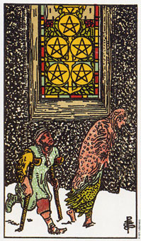

【关键词】 贫穷 疾病 艰困 爱侣
风雪交加，一对衣衫褴褛的乞丐夫妻蹒跚而行，从象征物质与精神，庇护的教堂前路过，却视而不见。图中柱着双拐的乞丐象征着疾病与困厄。此牌也象征着不渝的爱情，像图中处于贫困中依心心相印的爱侣，在冰天雪地中，给人一丝丝的温暖。图中的教堂只有窗户没有正门给人，是让人无限的深思。推测者可以根据自己的境况自由发挥联想。
推测：星币五出现，显示某方面有欠缺，可能是财务上需援助，可能是缺乏精神支持。同时，此牌也提醒珍惜拥有的一切。
星币五意味对那些充实你的事物的疏离感。
5在塔罗牌当中代表的是改变。而且当这些牌正立的时候，都有着心胸狭窄的意思;而倒立时则代表心胸宽大。人生当中唯一可以确定的就是，所有的事情都会改变。改变是好或坏，对或错，端赖你的观点。
星币五画着两个饥寒交迫，而且疲累不堪的人。其中一人的身体状况很差，这表示他长期以来的辛劳。在他们后面有一扇教堂的窗户，为他们在物质世界中提供了精神上的选择。它意味他们身体状况的根本原因，就是精神上的空虚。
他们可以选择如何去发现、跟随及落实精神之路。教堂其实只是他们的一种选择。它代表把精神价值介绍给那些无意去追求的人。在5这张牌中，这些人没有看见它，因此丧失了一个改变的机会。
虽然他们在一起，但感到孤单，当你精神无比空虚时，你就会强烈感受到内在的饥渴、寂寞和孤立感。在某种程度上你变得和人生疏离。这张牌上面位于人后面的教堂象征他们内心的圣堂。只要你让某个人、或某件事，阻挡在你和上帝或你的精神泉源之间，你就是在冒着迷失方向的危险。
星币五代表的是分离。它是一种对分离或孤独状态的认知，即使你是出于群体之中而非指是身体上和一个人或某种状况分开。有时候当你处于一群心灵无法相通的人之间时，可能会比你独处的时候更加感到孤独。
外在悲惨是内在悲惨的一种反映，所以当星币五出现时，你需要接受生命提供给你的改变机会。“如果你想改变这个世界，请先改变你自己”是这张牌的答案。
大体上的意义
就整体观点来看，星币五说的是财务上的困难、贫穷、疾病和内在的寂寞。在不断的挣扎当中，你很容易窄化你对问题的焦点，而忽略了你的机会。
当这张5出现时，深度的心灵改变是有其需要的，否则虽然有外在的助力，可能还是解决不了你的问题。你目前的人生观并非你的支柱，而现在你必须问自己，是否仍愿意保有这些信念。
星币五代表心灵空虚所反映出的身体征兆。在事业分析上，它意味着事业或对工作不敢兴趣;并且暗示由于你的态度一直不变，所以情况也一如往昔。
正位含义：
1.有金钱方面的烦恼，精神很充实，物质贫乏。
2.放浪，玩世不恭，生活态度不端正。
3.连续失败。
4.失业。
5.心灰意冷。
逆位含义：
1.担心居住问题，或近来房产方面有麻烦。
2.生活混乱无序，各种物质上的烦恼使你心神不宁。
3.方方面面的关系较对立。
4.想法荒唐，但碍于其中。
两性关系上的意义
星币五暗示你和伴侣的分离，而且无论你们是分开，或者仍在一起，你都是孤独而寂寞的。这种关系现实的是心灵空虚的症状，你的饥渴已经到了一种没有任何肉体或情感关系能够喂饱你的程度了。
这张牌暗示或许是到了你重新认识自己真正的人生目标的适当时候了。为了平息你的饥渴，内在的改变是需要的。
倒立的星币五
星币五倒立比正立时更为积极。它暗示一项改变即将到来，不论你对于为止事物有多么恐惧，这项改变都会为你带来机会和选择。
它可以说是从一个人或一种状况的束缚中解放出来，因为你让改变发生了。所有塔罗牌5的倒立都属于改变的牌，并且你认识到目前处理某种状况的方式，并不是唯一的方式，着确保你会愿意改变。生命不必是静止不动的。你可以改变，而且当你改变内心深处，生命将会改变它在表面上所提供给你的东西。
5的倒立暗示你的思想会越来越开放。现在最糟的状况已经过去了，当你继续改变，生命会在它呈现给你的机会中反映出你内在的自我。